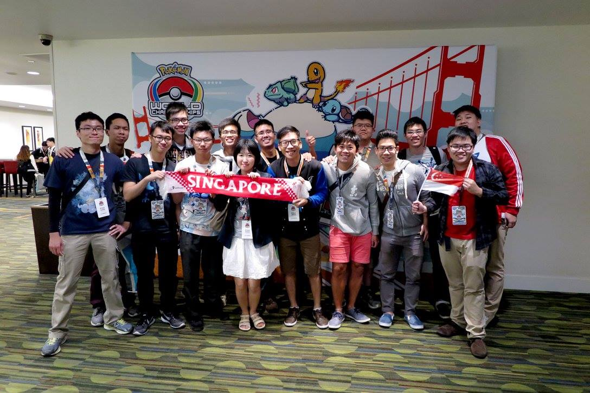

While studying in university, I discovered my passion in data analytics. Since that moment, my life has never been the same. As I continue to develop my skills in machine learning and analytics, I hope to apply them to solve business problems. Please contact me if you are keen to work on a project together!
International Baccalaureate Diploma: 40 points
Outside of school, I participate in Pokémon Video Game Competitions.
My accomplishments in the 2017 season have won me travel awards to compete in tournaments in many different cities, including Melbourne, São Paulo, Indianapolis, Anaheim and London.
Here is a photo from the 2016 Pokémon World Championships in San Francisco:

Because of a hectic schedule in university, I stopped competing in Pokémon tournaments to focus on my studies. However, I found a growing passion for data analytics. I spend my free time developing myself by acquiring a broad set of skills, with a focus on machine learning.
I watch videos and read various types of material on machine learning. These websites tend to be more technically advanced and have a deep learning focus. Here are some of them:
I also love Japanese food and culture. I have been to Tokyo in Summer and Winter before. But I'd love to go to other parts of Japan in Spring or Autumn.